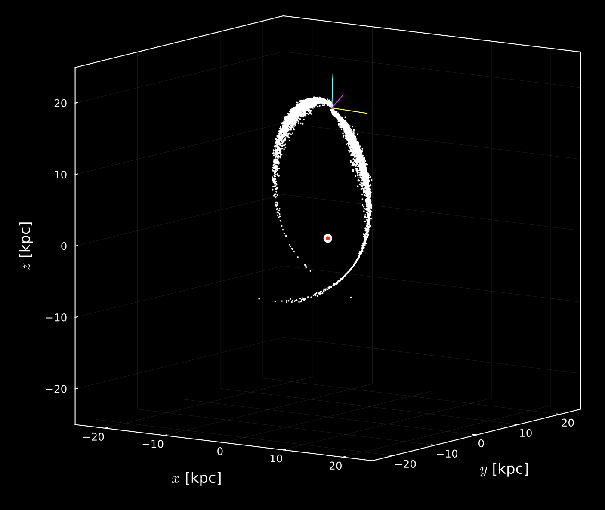
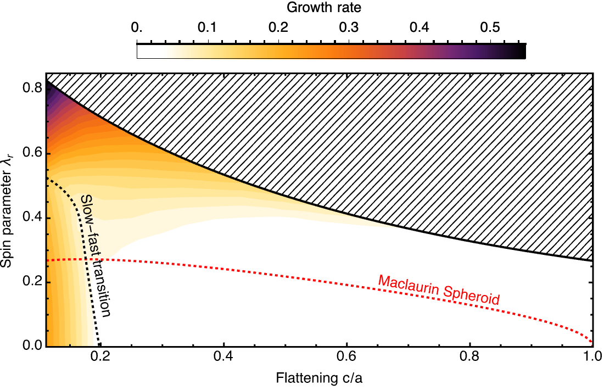
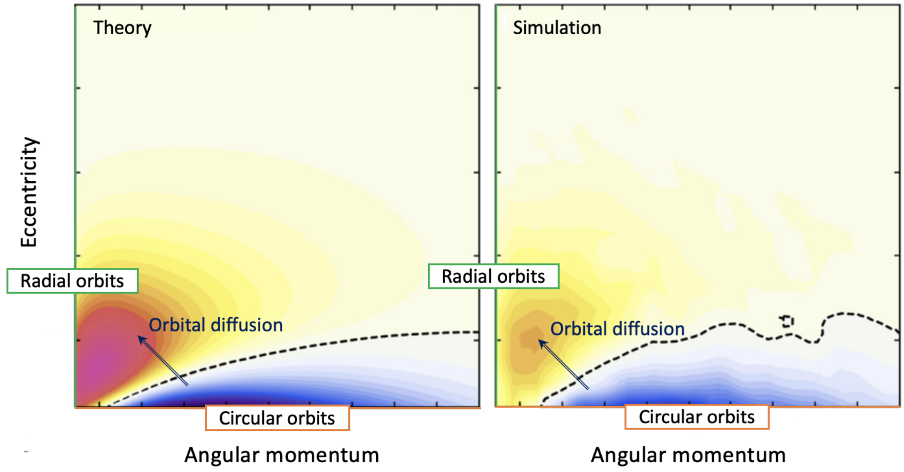
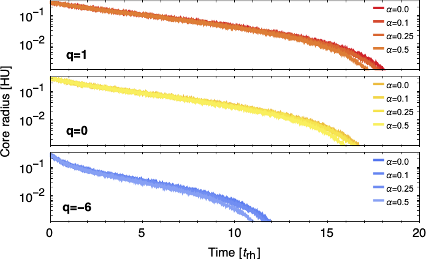
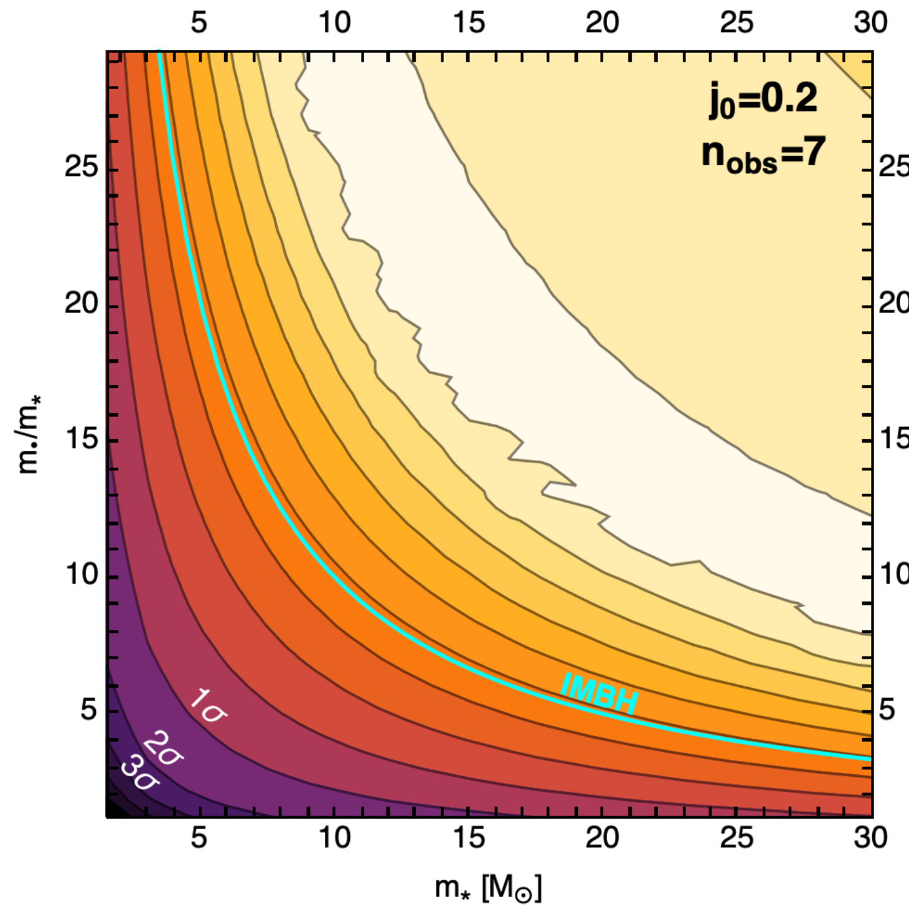
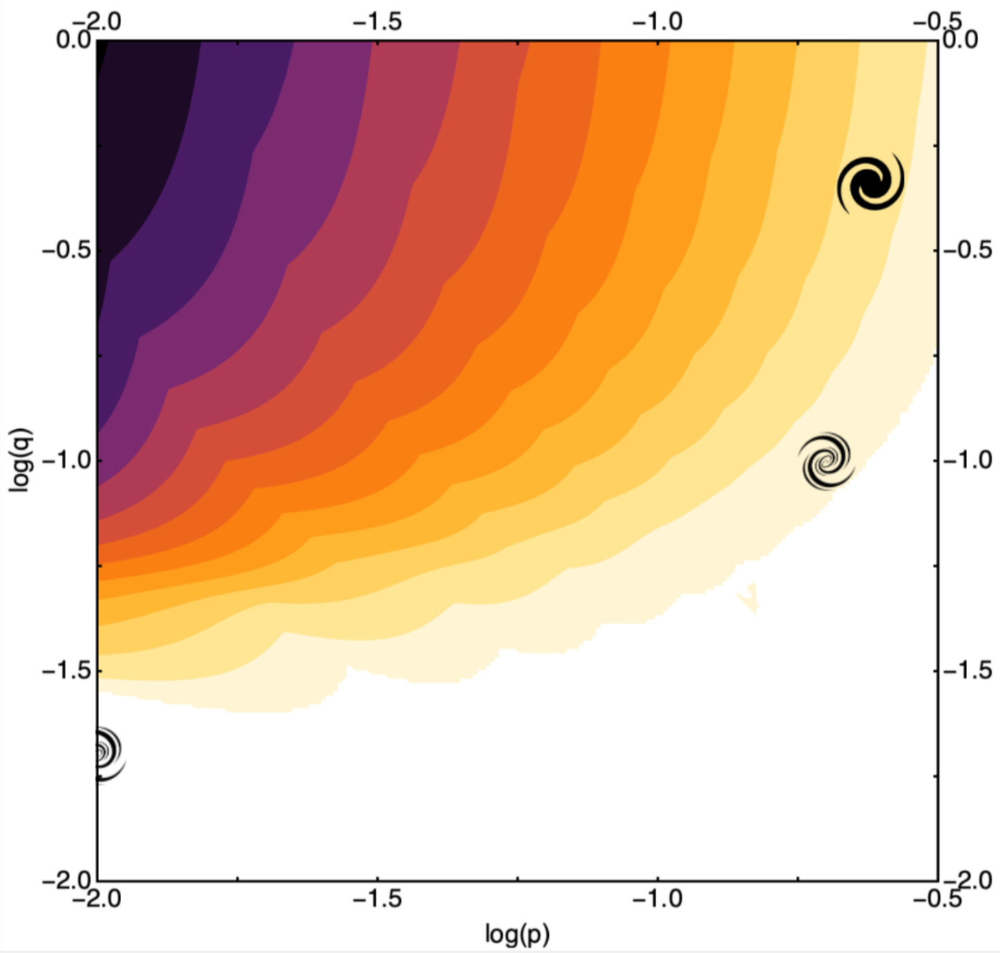

Stellar streams obtained using NBODY6++GPU (Wang & al. 2015) using the MWPotential2014 potential (Bovy 2015) after 5 Gyr.
Tidal forces strip stars from the progenitor via its L1 and L2 Lagrange points, leading to the creation of
stellar stars. The KRIOS code is able to reproduce the characteristics of
these streams to a satisfactory degree. We had to slightly modify NBODY6++GPU to resolve some issues with the current version of
the code, which fails when using MWPotential2014. We refer to the fork of the code available at KerwannTEP/Nbody6ppGPU.
Stellar streams in Galactic potentials
We use the KRIOS code to study the benefits of breaking spherical symmetry and how it relates to modeling the long-term evolution of a globular cluster (GC) in a
host galaxy potential. Each GC is evolved forward via a combination of the self-consistent field method and
Hénon-style two-body relaxation. Using analytic potential models for the Milky Way, we compare the stellar
streams modeled with KRIOS to NBODY6++GPU and particle-spray codes in order to determine its ability to
reproduce observables. KRIOS force calculations scale linearly with N, thus producing stream models orders-
of-magnitude faster than NBODY6++GPU for hundreds of thousands of particles. KRIOS outperforms a leading particle-spray code (Chen & al. 2025) in
replicating sky-plane information as well, rendering it a suitable intermediary between these two popular approaches.
We find particle-spray streams have more varied density, velocity dispersion, and disagreement angle
profiles than KRIOS, but their performance can be improved with better progenitor models and reducing Poisson noise.

Growth rate of the bi-symmetric instabilities as a function of flattening
and spin parameter. For highly flattened clusters, a transition (dashed black line)
between slowly rotating saddle modes and rapidly rotating spiral modes occurs.
For models rounders than c/a = 0.2, the cluster are either stables or subject to
the latter instability. Such clusters behave much differently than the Maclaurin
spheroids, which are the shapes that take rotating fluids with uniform density.
Linear stability of rotating, flattened clusters
We computed the
linear response of flattened Stäckel systems in rotation. Axial symmetry
allowed us to decompose the response matrix into
distinct azimuthal components.
Two families of fast and slow bi-symmetric modes were found: the
bending modes,
which are saddle-shaped, and the bar-growing modes, which are spiral
shaped. We showed the existence of a clear transition w.r.t. rotation
between these regimes for highly-flattened clusters. We denoted a
steep increase of the growth rate as one considers more flattened
clusters. Conversely, flattened systems tend to become more and more
stable as they become rounder for any rotation parameters. In
particular, clusters below their maximally available rotation become
completely stable at finite flattening, while the maximally rotating
clusters become stable in the isotropic spherical limit.
Our predictions match N-body simulations at the ∼10% level in terms of growth
rates, pattern speeds, and shapes.

The numerical simulations (N-body) and the theoretical predictions
(Chandrasekhar theory) of the orbital diffusion rate qualitatively agree with each
other, hence providing an explanation for the rate of core collapse
of an anisotropic globular cluster up to some overall numerical
prefactor: we observe the orbital diffusion of a
tangentially anisotropic cluster, which shuffles circular orbits
towards more radial ones.
Secular evolution of anisotropic globular clusters
Globular clusters are also subject to orbital diffusion induced by shot noise
fluctuations driven by the finite number of stars within. This process is described
by the corresponding Fokker-Planck equation via Chandrasekhar's theory.
We extended this formalism from isotropic to anisotropic clusters, and provided
an numerical implementation of the diffusion coefficients in Julia. Then, we studied
the impact of velocity anisotropy on the rate of change of the stellar DF. We
observed a striking match between our theoretical predictions and N-body simulations measurements,
including the acceleration of core collapse with increasing velocity anisotropy,
as well as the isotropisation process of the cluster.
Impact of rotation on the secular diffusion of GCs
We investigated the long-term relaxation of rotating, spherically symmetric
globular clusters through an extension of the orbit-averaged
Chandrasekhar formalism, which we compared to predictions to a set of N-body
simulations, up to core collapse. We found the impact of rotation on in-plane relaxation
to be weak, with a clear match between theoretical
predictions and N-body measurements. We found no strong gravo-gyro catastrophe
accelerating core collapse for stable rotating clusters. Both kinetic theory and
simulations predict a reshuffling of orbital inclinations from overpopulated
regions to underpopulated ones. This trend accelerates
as the amount of rotation is increased. Yet, for orbits closer to the rotational
plane, the non-resonant prediction does not reproduce
numerical measurements. This mismatch may from these orbits’
coherent interactions, which are not captured by the
non-resonant formalism that only addresses local deflections.

Core radius as a function of time, as measured in N-body simulations.
Increasing the rotation strength α slightly
reduces the time of core collapse. Nevertheless, the impact of rotation
does not lead to any gravo-gyro catastrophe in this particular case, and is
negligeable compared to that of velocity anisotropy.
IMBHs search in the Galactic center via SRR
Because galactic centers are dominated by their central supermassive
black hole, the star’s orbits are quasi-Keplerian, as a result of
both relativistic effects and the cluster’s mass. Hence the nuclear
cluster is subject to orbital distortions, which can be described
through the inhomogeneous Balescu-Lenard equation.
We applied this framework to the S-cluster of the Galactic
centre in order to probe the presence of intermediate mass black
holes (IMBHs). The Poisson noise induced by finite-N effects sources
a slow diffusion of the eccentricities of these orbits over time
, whose efficiency depends on the parameters of the
background unresolved cluster composed of old stars and IMBHs.
Relying on the current observations of the S-cluster’s and using
the orbital diffusion formalism, we evolved the system using a
Fokker-Planck equation, given a set of initial conditions and a
model of the invisible background cluster and devised a protocol
to determine the parameters of the IMBH family from the astrometric
data describing the S-cluster using a maximum likelihood analysis,
which I used to constrained the possible IMBH cluster’s parameters.

Confidence regions for a star+BH family using the
maximum likelihood method, applied to the observed stars of a the central
S-cluster, assuming large initial eccentricities (binary disruption formation scenario).
Models above the cyan line correspond IMBHs candidates. Here, the most likely scenarii
involve IMBHs.
Galactic bars in NewHorizon
We modeled the NewHorizon galaxies as a thin self-gravitating gas disk, a central spherical bulge
and a spherical dark matter halo. This system is described by the Euler-Poisson equations, which upon linearization yields an eigenmode problem.
I used the matrix method to translate this linear problem into an infinite matrix eigenvalues problem, which allowed me to recover the growth modes by
truncation. Using this efficient framework, we were able to extensively explore for the first time a large portion of the parameters describing thin galactic disks
(bulge fraction, dark halo, etc...) in order to explain the low bar formation rate observed in the NewHorizon simulation.
We showed that discs are too light and too bulgy to grow bars, which strongly suggests that the efficiency of star
formation and the accretion history in cosmological simulations must be revisited to accommodate for smaller bulges and/or more massive stellar discs,
hence allowing galaxies to grow bars.

Fastest growth mode drives bar formation. Here, darker colors translate to faster
growth mode. The left part of the plot corresponds to bulge-less galaxies and the
higher part of the plot corresponds to halo-less galaxies. The galaxy symbols
represent the typical galaxy of the NewHorizon simulation: the filled galaxy
symbol corresponds to a galaxy that has formed a bar in the simulation, while the
fainter symbols represent galaxy which have not. The white region corresponds to
parameters for which the growth time exceeds 10 dynamical times.